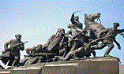

Население
Самара является городом-миллионером, согласно последней переписи населения, проведенной в 2019 году. Город расположен на юго-востоке европейской части России и является административным центром Самарской области.
Самара расположена на левом берегу реки Волга, в средней части России. Это большой город с населением более миллиона человек, который является важным экономическим, культурным и образовательным центром страны. Самара также имеет богатую историю, восходящую к XVI веку, когда она была основана как крепость для защиты от кочевников. В XX веке город активно развивался, были построены крупные промышленные предприятия и научные учреждения. Сегодня Самара продолжает расти и развиваться, оставаясь одним из ведущих городов России.

Наука в Самаре представлена рядом исследовательских институтов, университетов и научных центров. В городе работают такие крупные научные организации, как Институт систем обработки изображений РАН, Институт экологии Волжского бассейна РАН, Самарский национальный исследовательский университет имени академика С.П. Королева и другие.
Культура в Самаре представлена множеством театров, музеев, галерей, библиотек и культурных центров. В городе работают несколько театров, включая Самарский академический театр оперы и балета, Самарский театр юного зрителя и Самарский драматический театр. Также есть несколько музеев, таких как Самарский областной историко-краеведческий музей, музей “Самара Космическая” и музей Модерна.
